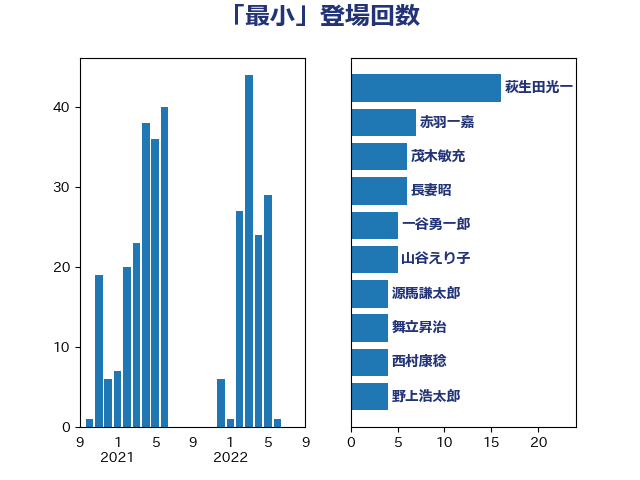

単語「最小」

| 萩生田光一 | 自由民主党 | 16 回 |
| 赤羽一嘉 | 公明党 | 7 回 |
| 茂木敏充 | 自由民主党 | 6 回 |
| 長妻昭 | 立憲民主党 | 6 回 |
| 一谷勇一郎 | 日本維新の会 | 5 回 |
| 山谷えり子 | 自由民主党 | 5 回 |
| 源馬謙太郎 | 立憲民主党 | 4 回 |
| 舞立昇治 | 自由民主党 | 4 回 |
| 西村康稔 | 自由民主党 | 4 回 |
| 野上浩太郎 | 自由民主党 | 4 回 |
| 金子恵美 | 立憲民主党 | 4 回 |
| 鈴木俊一 | 自由民主党 | 4 回 |
| 高市早苗 | 自由民主党 | 4 回 |
| 古賀友一郎 | 自由民主党 | 3 回 |
| 小泉進次郎 | 自由民主党 | 3 回 |
| 岸信夫 | 自由民主党 | 3 回 |
| 岸田文雄 | 自由民主党 | 3 回 |
| 徳永エリ | 立憲民主党 | 3 回 |
| 末松信介 | 自由民主党 | 3 回 |
| 橋本聖子 | 無所属 | 3 回 |
| 櫻井周 | 立憲民主党 | 3 回 |
| 足立康史 | 日本維新の会 | 3 回 |
| 中川正春 | 立憲民主党 | 2 回 |
| 奥野総一郎 | 立憲民主党 | 2 回 |
| 寺田学 | 立憲民主党 | 2 回 |
| 山崎正恭 | 公明党 | 2 回 |
| 山崎誠 | 立憲民主党 | 2 回 |
| 後藤祐一 | 立憲民主党 | 2 回 |
| 後藤茂之 | 自由民主党 | 2 回 |
| 浅野哲 | 国民民主党 | 2 回 |
| 田村憲久 | 自由民主党 | 2 回 |
| 細田健一 | 自由民主党 | 2 回 |
| 足立敏之 | 自由民主党 | 2 回 |
| 野中厚 | 自由民主党 | 2 回 |
| 音喜多駿 | 日本維新の会 | 2 回 |
| 高木かおり | 日本維新の会 | 2 回 |
| 高橋千鶴子 | 日本共産党 | 2 回 |
| ながえ孝子 | 無所属 | 1 回 |
| 三原じゅん子 | 自由民主党 | 1 回 |
| 上田清司 | 国民民主党 | 1 回 |
| 下村博文 | 自由民主党 | 1 回 |
| 下野六太 | 公明党 | 1 回 |
| 中川康洋 | 公明党 | 1 回 |
| 中川郁子 | 自由民主党 | 1 回 |
| 中谷一馬 | 立憲民主党 | 1 回 |
| 中野英幸 | 自由民主党 | 1 回 |
| 串田誠一 | 日本維新の会 | 1 回 |
| 井上信治 | 自由民主党 | 1 回 |
| 今枝宗一郎 | 自由民主党 | 1 回 |
| 伊藤孝恵 | 国民民主党 | 1 回 |
| 務台俊介 | 自由民主党 | 1 回 |
| 古賀之士 | 立憲民主党 | 1 回 |
| 吉川ゆうみ | 自由民主党 | 1 回 |
| 吉川沙織 | 立憲民主党 | 1 回 |
| 吉田宣弘 | 公明党 | 1 回 |
| 和田政宗 | 自由民主党 | 1 回 |
| 城井崇 | 立憲民主党 | 1 回 |
| 堀場幸子 | 日本維新の会 | 1 回 |
| 塩田博昭 | 公明党 | 1 回 |
| 大口善徳 | 公明党 | 1 回 |
| 大岡敏孝 | 自由民主党 | 1 回 |
| 小宮山泰子 | 立憲民主党 | 1 回 |
| 小林鷹之 | 自由民主党 | 1 回 |
| 山岸一生 | 立憲民主党 | 1 回 |
| 山添拓 | 日本共産党 | 1 回 |
| 岩渕友 | 日本共産党 | 1 回 |
| 岸真紀子 | 立憲民主党 | 1 回 |
| 川合孝典 | 国民民主党 | 1 回 |
| 打越さく良 | 立憲民主党 | 1 回 |
| 斉藤鉄夫 | 公明党 | 1 回 |
| 本村伸子 | 日本共産党 | 1 回 |
| 杉久武 | 公明党 | 1 回 |
| 松本剛明 | 自由民主党 | 1 回 |
| 松沢成文 | 日本維新の会 | 1 回 |
| 林芳正 | 自由民主党 | 1 回 |
| 枝野幸男 | 立憲民主党 | 1 回 |
| 柳ヶ瀬裕文 | 日本維新の会 | 1 回 |
| 榛葉賀津也 | 国民民主党 | 1 回 |
| 武田良太 | 自由民主党 | 1 回 |
| 沢田良 | 日本維新の会 | 1 回 |
| 河野太郎 | 自由民主党 | 1 回 |
| 泉健太 | 立憲民主党 | 1 回 |
| 浜口誠 | 国民民主党 | 1 回 |
| 熊田裕通 | 自由民主党 | 1 回 |
| 猪口邦子 | 自由民主党 | 1 回 |
| 田名部匡代 | 立憲民主党 | 1 回 |
| 田村貴昭 | 日本共産党 | 1 回 |
| 石破茂 | 自由民主党 | 1 回 |
| 福島みずほ | 社会民主党 | 1 回 |
| 笹川博義 | 自由民主党 | 1 回 |
| 紙智子 | 日本共産党 | 1 回 |
| 菅義偉 | 自由民主党 | 1 回 |
| 西銘恒三郎 | 自由民主党 | 1 回 |
| 赤澤亮正 | 自由民主党 | 1 回 |
| 酒井庸行 | 自由民主党 | 1 回 |
| 野田聖子 | 自由民主党 | 1 回 |
| 金城泰邦 | 公明党 | 1 回 |
| 長友慎治 | 国民民主党 | 1 回 |
| 阿部司 | 日本維新の会 | 1 回 |
| 阿部知子 | 立憲民主党 | 1 回 |
| 高橋はるみ | 自由民主党 | 1 回 |